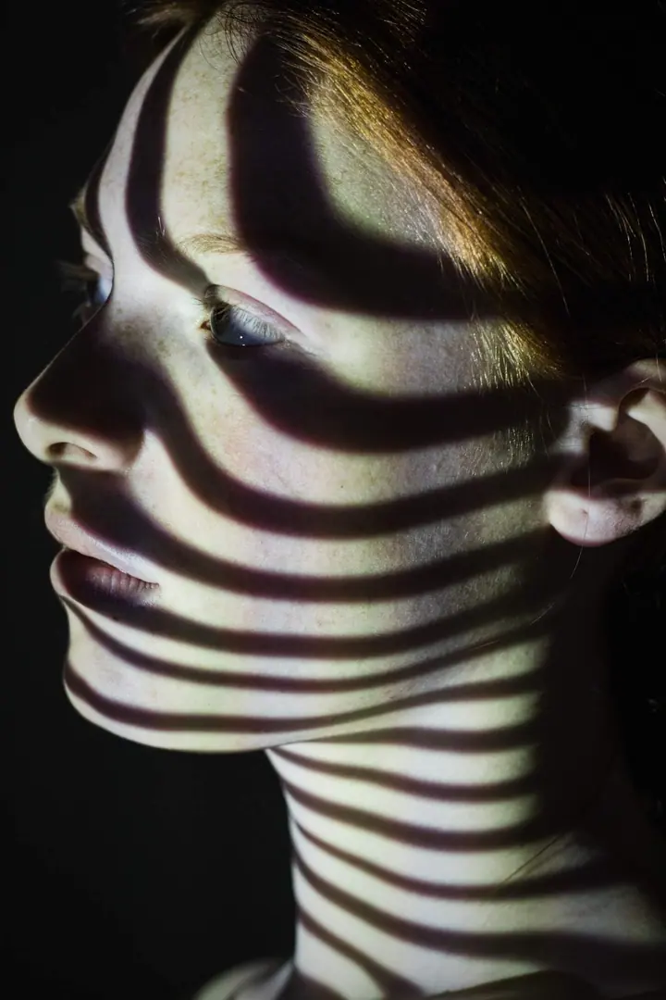
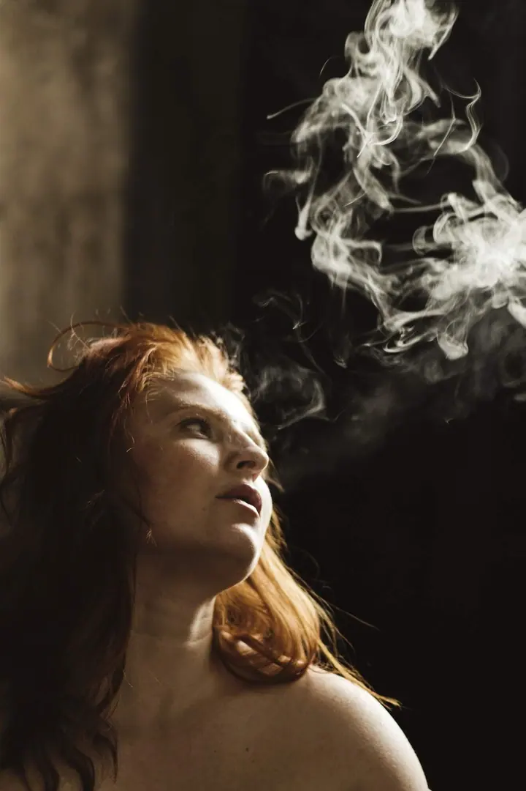

Emocionální portrét
Zachycuji emoce a krásu, tu vnější i tu vnitřní. Ta vnitřní nebývá tak prchavá, v očích a v duši zůstává po celý život.

Fotografka emocionálních portrétů
Jmenuji se Dita Kozáková a fotím emocionální portréty v Praze a v jižních Čechách. Na fotografiích zachycuji kouzlo okamžiku, pocitu a nálady. Fotím v uvolněné atmosféře, kde je prostor i pro vás a vaše představy.
Zeptat se na termín
Zachycuji emoce a krásu, tu vnější i tu vnitřní. Ta vnitřní nebývá tak prchavá, v očích a v duši zůstává po celý život.
Portrét s promyšleným světlem, barvou a rekvizitou. Pomohu vám skrze fotografii vyjádřit svoje „já“ a klidně vystoupit z komfortní zóny.
Ženské portréty, ve kterých hraje hlavní roli světlo a nálada. Tvoříme v uvolněné atmosféře, kde je prostor i pro vaše představy.
Narodila jsem se v roce 1970 v Písku a fotografii se intenzivně věnuji od roku 2020. Jsem členkou Svazu českých fotografů, České federace fotografického umění, IMPC a Fotoklubu Praha. Prošla jsem také Akademií Ateliéru v továrně v Praze a jsem členkou píseckého Fotoklubu.
Ve své tvorbě se soustředím hlavně na emocionální portrét a sociální dokument. Zajímají mě vnitřní stavy, tiché emoce a jemné proměny identity. Pracuji intuitivně a s důrazem na autenticitu. Moje fotografie nedávají jednoznačné odpovědi, spíš nabízejí prostor ke zpomalení.
Mám za sebou několik samostatných výstav a moje práce se objevily v projektech Czech Art Photo a Natura Photografica. V březnu 2026 byly moje fotografie součástí mezinárodní výstavy VisioMentis v italském Catanzaru a v dubnu 2026 jsem v Praze vystavovala soubor „Pod kůží ticha“. Obrazy z této výstavy poputují do azylového domova pro ženy v Praze.
Zavolejte mi nebo napište. Probereme, jaký portrét si představujete a co od fotografie čekáte.
Společně vybereme styl, oblečení a místo, ať už to bude ateliér, nebo příroda.
Fotíme v klidu a bez spěchu. Pomůžu vám uvolnit se, aby výsledná fotografie byla dílem nás obou.
Vybrané fotografie upravím a předám v digitální podobě. Pokud chcete, připravím z nich i fotoobraz na plátně.
Balíček 10 upravených fotografií v digitální podobě stojí 2 000 Kč. Pokud vám stačí méně, minimálně 5 fotografií vyjde na 1 500 Kč.
Určitě. Ráda s klienty mluvím a snažím se je uvolnit, takže si focení hlavně užijete. Pózovat umět nemusíte.
Nefotím jen v ateliéru, ráda fotím i v přírodě. Místo vybereme podle toho, jakou náladu má fotografie mít.
Ano, nabízím fotoobrazy na plátně s dřevěným rámem v různých formátech. Cenu vám sdělím na vyžádání.